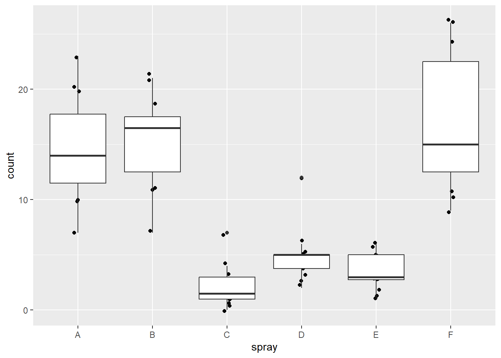
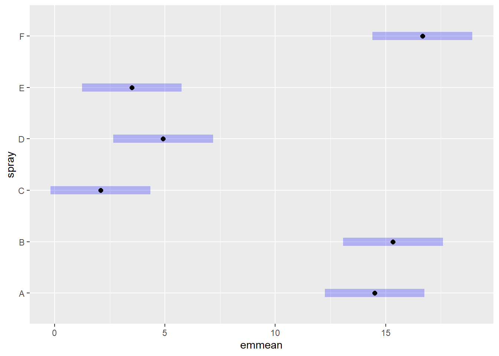

library(gsheet)
micelial <- gsheet2tbl("https://docs.google.com/spreadsheets/d/1bq2N19DcZdtax2fQW9OHSGMR0X2__Z9T/edit#gid=959387827")ANOVA
Teste de hipótese de três ou mais grupos independentes
A Análise de Variância (ou ANOVA) é uma técnica estatística usada para comparar a média de três ou mais grupos e determinar se há diferenças significativas entre eles.
No caso da ANOVA, as hipóteses formuladas são as seguintes: - Hipótese nula (Ho): as médias dos grupos não diferem entre si - Hipótese alternativa (Ha): pelo menos a média de um dos grupos difere das demais
Quando o conjunto de dados apresenta um único fator, a análise de variância realizada é denominada de One-Way ANOVA ou ANOVA unifatorial.
Quando o conjunto de dados apresenta dois fatores, a análise de variância realizada é denominada de Two-Way ANOVA ou ANOVA fatorial.
Importação dos dados
Usando a função gsheet2tbl() do pacote gsheet, foi importado um conjunto de dados envolvendo 5 grupos independentes.
Visualização dos dados
Para a visualização dos dados, foi usada a função ggplot() juntamente com o geom_jitter(). Como o conjunto de dados possui apenas 6 repetições para cada grupo, é preferível usar o jitter que o boxplot.
library(tidyverse)
micelial |>
ggplot(aes(especie, tcm))+
geom_jitter(width = 0.05)Pode-se observar que há uma variabilidade visível entre os diferentes grupos, podendo inferir que uma das médias será diferente das demais.
ANOVA
Para executar uma análise de variância com o conjunto de dados trabalhado, o primeiro passo é ajustar os dados em um modelo linear. Esse ajuste é realiza através da função lm(), no qual a fórmula tcm ~ especie especifica que tcm (a variável resposta) está sendo modelada em função de especie (a variável preditora).
m1 <- lm(tcm ~ especie, data = micelial)Para exibir um resumo detalhado do modelo ajustado, pode ser utilizada a função summary(). Ela fornece as seguintes informações: - Coeficientes: Estimativas dos parâmetros do modelo (intercepto e coeficientes para cada nível de especie). - Erro padrão: Medida da precisão das estimativas dos coeficientes. - Estatística t e valor p: Usados para testar a hipótese nula de que cada coeficiente é igual a zero (sem efeito). - R^2 e R^2 ajustado: Medidas da qualidade do ajuste do modelo aos dados. - Estatística F: Teste global de significância do modelo.
summary(m1)
Call:
lm(formula = tcm ~ especie, data = micelial)
Residuals:
Min 1Q Median 3Q Max
-0.23667 -0.09667 0.01583 0.08833 0.28333
Coefficients:
Estimate Std. Error t value Pr(>|t|)
(Intercept) 1.57167 0.05585 28.140 < 2e-16 ***
especieFaus -0.33500 0.07899 -4.241 0.000266 ***
especieFcor -0.25000 0.07899 -3.165 0.004047 **
especieFgra -0.66000 0.07899 -8.356 1.05e-08 ***
especieFmer -0.14500 0.07899 -1.836 0.078317 .
---
Signif. codes: 0 '***' 0.001 '**' 0.01 '*' 0.05 '.' 0.1 ' ' 1
Residual standard error: 0.1368 on 25 degrees of freedom
Multiple R-squared: 0.7585, Adjusted R-squared: 0.7199
F-statistic: 19.63 on 4 and 25 DF, p-value: 2.028e-07#Se quisermos fazer o summary sem interceptar uma espécie:
m2 <- lm(tcm ~ especie -1, data = micelial)
summary(m2)
Call:
lm(formula = tcm ~ especie - 1, data = micelial)
Residuals:
Min 1Q Median 3Q Max
-0.23667 -0.09667 0.01583 0.08833 0.28333
Coefficients:
Estimate Std. Error t value Pr(>|t|)
especieFasi 1.57167 0.05585 28.14 < 2e-16 ***
especieFaus 1.23667 0.05585 22.14 < 2e-16 ***
especieFcor 1.32167 0.05585 23.66 < 2e-16 ***
especieFgra 0.91167 0.05585 16.32 7.66e-15 ***
especieFmer 1.42667 0.05585 25.54 < 2e-16 ***
---
Signif. codes: 0 '***' 0.001 '**' 0.01 '*' 0.05 '.' 0.1 ' ' 1
Residual standard error: 0.1368 on 25 degrees of freedom
Multiple R-squared: 0.991, Adjusted R-squared: 0.9892
F-statistic: 552.2 on 5 and 25 DF, p-value: < 2.2e-16Por fim, a análise de variância é executada usando a função anova(). Ela fornece as seguintes informações: - Df: Graus de liberdade associados ao modelo e aos resíduos. - Sum Sq: Soma dos quadrados (Soma dos quadrados do modelo e dos resíduos). - Mean Sq: Quadrados médios (Soma dos quadrados dividida pelos graus de liberdade correspondentes). - F value: Estatística F (razão dos quadrados médios do modelo e dos resíduos). - Pr(>F): Valor p associado à estatística F, usado para testar a hipótese nula de que todos os coeficientes (exceto o intercepto) são iguais a zero.
anova(m1)Analysis of Variance Table
Response: tcm
Df Sum Sq Mean Sq F value Pr(>F)
especie 4 1.46958 0.36739 19.629 2.028e-07 ***
Residuals 25 0.46792 0.01872
---
Signif. codes: 0 '***' 0.001 '**' 0.01 '*' 0.05 '.' 0.1 ' ' 1Como o p-valor foi inferior ao nível de significância (5%), podemos rejeitar a hipótese nula de que todos os grupos são iguais. Logo, pelo menos uma das médias difere estatisticamente das demais.
Contudo, através da ANOVA não é possível saber qual dos grupos difere das demais ou se há mais de um grupo que difere estatisticamente.
Teste de Tukey
Para saber qual média está se diferindo das demais, deve ser utilizado um teste de comparação de médias, como o Teste de Tukey.
Para realizar esse teste, primeiramente foi usada a função emmeans() do pacote emmeans para obter as médias da variável resposta em função das espécies (grupos).
library(emmeans)
medias1 <- emmeans(m1, ~ especie)
medias1 especie emmean SE df lower.CL upper.CL
Fasi 1.572 0.0559 25 1.457 1.69
Faus 1.237 0.0559 25 1.122 1.35
Fcor 1.322 0.0559 25 1.207 1.44
Fgra 0.912 0.0559 25 0.797 1.03
Fmer 1.427 0.0559 25 1.312 1.54
Confidence level used: 0.95 Usando a função cld() e argumento Letters = letters dos pacotes multcompe multcompView, é possível visualizar a diferença entre os grupos através do agrupamento das médias estatisticamente iguais representadas pela mesma letra.
library(multcomp)
library(multcompView)
cld(medias1, Letters = letters) especie emmean SE df lower.CL upper.CL .group
Fgra 0.912 0.0559 25 0.797 1.03 a
Faus 1.237 0.0559 25 1.122 1.35 b
Fcor 1.322 0.0559 25 1.207 1.44 b
Fmer 1.427 0.0559 25 1.312 1.54 bc
Fasi 1.572 0.0559 25 1.457 1.69 c
Confidence level used: 0.95
P value adjustment: tukey method for comparing a family of 5 estimates
significance level used: alpha = 0.05
NOTE: If two or more means share the same grouping symbol,
then we cannot show them to be different.
But we also did not show them to be the same. Observando o resultado do Teste de Tukey, ocorreu a formação de 3 grupos estatisticamente distintos. Pode-se inferir que a espécie Fgra difere estatisticamente de todas as outras espécies. A espécie Fasi só não difere estatisticamente da espécie Fmer. As espécies Faus e Fcor não diferem entre si e não diferem de Fmer, mas diferem do resto das espécies.
Teste das premissas
Na Análise de Variância, as premissas de normalidade e de homocedasticidade também devem ser atendidas.
O teste de normalidade nesse caso é feito com os residuals (é cada diferença entre a média estimada e o valor original).
hist(m1$residuals)
shapiro.test(m1$residuals)
Shapiro-Wilk normality test
data: m1$residuals
W = 0.9821, p-value = 0.8782Observa-se que não rejeita a hipótese nula, ou seja, os dados são normais.
O teste de variância para três ou mais grupos independentes é feito com o Bartlett-test. Ele é executado usando a função bartlett.test().
bartlett.test(tcm ~ especie, data = micelial)
Bartlett test of homogeneity of variances
data: tcm by especie
Bartlett's K-squared = 4.4367, df = 4, p-value = 0.3501#Não rejeita a hipótese nula --> são homogêneasNota-se que a hipótese nula não é rejeitada, indicando que as variâncias são homogêneas.
Checando as premissas pelo pacote DHARMa
Outra forma de checar se as premissas foram atendidas é através da função simulateResiduals() do pacote DHARMa.
library(DHARMa)
plot(simulateResiduals(m1))
O gráfico da esquerda é um QQ plot dos residuals, ele compara a distribuição dos resíduos simulados com a distribuição teórica esperada (geralmente a normal). Os pontos devem seguir a linha diagonal. Desvios significativos da linha indicam que os resíduos não seguem a distribuição esperada, sugerindo que o modelo pode estar mal ajustado. Nesse caso não foi observado nenhum desvio.
O gráfico da direita mostra os resíduos simulados em função dos valores preditos pelo modelo. Para que a premissa da homocedasticidade seja atendida, não deve haver nenhum padrão evidente. Padrões ou tendências podem indicar falta de ajuste, variância não constante ou relações não modeladas entre as variáveis.
Checando as premissas pelo pacote performance
Outra forma de checar as premissas é através das funções check_normality() e check_heteroscedasticity() do pacote performance. Eles conferem se os dados apresentam distribuição normal e variâncias homogêneas de forma automática.
library(performance)
check_normality(m1)OK: residuals appear as normally distributed (p = 0.878).check_heteroscedasticity(m1)OK: Error variance appears to be homoscedastic (p = 0.880).ANOVA de dados não-paramétricos
Ao realizar uma análise de variância, as premissas de normalidade e de homocedasticidade podem não ser atendidas. Nesse caso, é necessário adotar algumas medidas para resolver a análise.
Existem 3 alternativas que podem ser adotadas para que as premissas sejam atendidas: - Transformação dos dados - Teste não-paramétrico - GLM
Importação dos dados
Foi importando um dataframe nativo do R, denominado de InsectSprays.
inseticida <- InsectSpraysPara contar quantos inseticidas diferentes foram usados, foi executado a função count().
inseticida |>
count(spray) spray n
1 A 12
2 B 12
3 C 12
4 D 12
5 E 12
6 F 12Visualização dos dados
Para visualizar os dados, foi criado um gráfico de boxplot e de pontos usando as funções ggplot(), geom_boxplot() e geom_jitter().
inseticida |>
ggplot(aes(spray, count))+
geom_jitter(width = 0.05)+
geom_boxplot()
Pela assimetria dos boxplots e pela suas estruturas, já é possível prever que o conjunto de dados não atende as premissas de normalidade e homocedasticidade.
ANOVA
Para realizar a análise de variância, os dados foram ajustado ao modelo linear pela função lm() e foi executado a anova().
m2 <- lm(count ~ spray, data = inseticida)
summary(m2)
Call:
lm(formula = count ~ spray, data = inseticida)
Residuals:
Min 1Q Median 3Q Max
-8.333 -1.958 -0.500 1.667 9.333
Coefficients:
Estimate Std. Error t value Pr(>|t|)
(Intercept) 14.5000 1.1322 12.807 < 2e-16 ***
sprayB 0.8333 1.6011 0.520 0.604
sprayC -12.4167 1.6011 -7.755 7.27e-11 ***
sprayD -9.5833 1.6011 -5.985 9.82e-08 ***
sprayE -11.0000 1.6011 -6.870 2.75e-09 ***
sprayF 2.1667 1.6011 1.353 0.181
---
Signif. codes: 0 '***' 0.001 '**' 0.01 '*' 0.05 '.' 0.1 ' ' 1
Residual standard error: 3.922 on 66 degrees of freedom
Multiple R-squared: 0.7244, Adjusted R-squared: 0.7036
F-statistic: 34.7 on 5 and 66 DF, p-value: < 2.2e-16anova(m2)Analysis of Variance Table
Response: count
Df Sum Sq Mean Sq F value Pr(>F)
spray 5 2668.8 533.77 34.702 < 2.2e-16 ***
Residuals 66 1015.2 15.38
---
Signif. codes: 0 '***' 0.001 '**' 0.01 '*' 0.05 '.' 0.1 ' ' 1Com o p-valor inferior ao nível de significância, a hipótese nula é rejeitada.
Teste de Tukey
Em seguida foi usado o Teste de Tukey para comparação das médias entre os grupos
m2_medias <- emmeans(m2, ~ spray)
plot(m2_medias)
cld(m2_medias, Letters = letters) spray emmean SE df lower.CL upper.CL .group
C 2.08 1.13 66 -0.177 4.34 a
E 3.50 1.13 66 1.240 5.76 a
D 4.92 1.13 66 2.656 7.18 a
A 14.50 1.13 66 12.240 16.76 b
B 15.33 1.13 66 13.073 17.59 b
F 16.67 1.13 66 14.406 18.93 b
Confidence level used: 0.95
P value adjustment: tukey method for comparing a family of 6 estimates
significance level used: alpha = 0.05
NOTE: If two or more means share the same grouping symbol,
then we cannot show them to be different.
But we also did not show them to be the same. Pelo resultado do teste nota-se que existem dois grupos estatisticamente diferentes. Sendo que os inseticidas C, E e D não diferem entre si, mas diferem de A, B e F (que por sua vez não diferem entre si).
Tanto a Análise de Variância quanto o Teste de Tukey foram executados, no entanto, para que essas análises sejam considerados válidos, é necessário conferir se o conjunto de dados atende às premissas de normalidade e de homocedasticidade.
Teste de normalidade
O teste de normalidade foi executado por meio do Shapiro-test com os resíduos através da função shapiro.test(). Também foi usado qqnorm() e qqline() para visualizar a normalidade por meio de gráfico.
hist(m2$residuals)shapiro.test(m2$residuals)
Shapiro-Wilk normality test
data: m2$residuals
W = 0.96006, p-value = 0.02226qqnorm(m2$residuals)
qqline(m2$residuals)
O Shapiro-test forneceu um p-valor inferior ao nível de significância, rejeitando a hipótese nula de que o dado segue uma distribuição normal, ou seja, os dados não apresentam normalidade.
O gráfico criado também demonstra desvios em relação à reta, o que indica a não normalidade.
Teste de variância
O teste de variância foi executado com a função bartlett.test().
bartlett.test(count ~ spray, data = inseticida)
Bartlett test of homogeneity of variances
data: count by spray
Bartlett's K-squared = 25.96, df = 5, p-value = 9.085e-05#Rejeitamos a homogeneicidade entre as variânciasObserva-se que o p-valor é inferior a 5%, rejeitando a hipótese nula de que as variâncias são homogêneas.
Usando as funções check_normality() e check_heteroscedasticity(), observa-se os mesmos resultados.
check_normality(m2)Warning: Non-normality of residuals detected (p = 0.022).check_heteroscedasticity(m2)Warning: Heteroscedasticity (non-constant error variance) detected (p < .001).A função simulateResiduals() também indica a falta de homocedasticidade dos dados, embora não indique a falta de normalidade.
plot(simulateResiduals(m2))
Não atendendo as duas premissas, esse conjunto de dados precisa ser manipulado para que as premissas sejam atendidas e o resultado de sua análise seja válido.
Alternativa 1 - Transformação de dados
Uma medida que pode ser adotada para que os dados atendam as premissas é a transformação dos dados.
Os dados podem ser transformados de diversas formas, mas os principais são por raiz quadrada, por log(x) e por box-cox.
Note
Pode ser usado log(x + 0.5) ao invés de log(x) quando existe um valor igual a 0 nas variáveis respostas.
Transformação por raiz quadrada
Uma nova coluna com os valores transformados será criado para o conjunto de dados usando a função mutate().
inseticida <- inseticida |>
mutate(count2 = sqrt(count))Visualizando os novos dados, é possível notar as alterações.
inseticida |>
ggplot(aes(spray, count2))+
geom_boxplot()
Com os dados transformados, será realizado uma nova análise de variância para observar se houve alguma mudança.
m3 <- lm(count2 ~ spray,
data = inseticida)
summary(m3)
Call:
lm(formula = count2 ~ spray, data = inseticida)
Residuals:
Min 1Q Median 3Q Max
-1.24486 -0.39970 -0.01902 0.42661 1.40089
Coefficients:
Estimate Std. Error t value Pr(>|t|)
(Intercept) 3.7607 0.1814 20.733 < 2e-16 ***
sprayB 0.1160 0.2565 0.452 0.653
sprayC -2.5158 0.2565 -9.807 1.64e-14 ***
sprayD -1.5963 0.2565 -6.223 3.80e-08 ***
sprayE -1.9512 0.2565 -7.606 1.34e-10 ***
sprayF 0.2579 0.2565 1.006 0.318
---
Signif. codes: 0 '***' 0.001 '**' 0.01 '*' 0.05 '.' 0.1 ' ' 1
Residual standard error: 0.6283 on 66 degrees of freedom
Multiple R-squared: 0.7724, Adjusted R-squared: 0.7552
F-statistic: 44.8 on 5 and 66 DF, p-value: < 2.2e-16anova(m3)Analysis of Variance Table
Response: count2
Df Sum Sq Mean Sq F value Pr(>F)
spray 5 88.438 17.6876 44.799 < 2.2e-16 ***
Residuals 66 26.058 0.3948
---
Signif. codes: 0 '***' 0.001 '**' 0.01 '*' 0.05 '.' 0.1 ' ' 1A análise continua rejeitando a hipótese nula. Em seguida foi comparado as médias entre os grupos.
m3_medias <- emmeans(m3, ~ spray)
plot(m3_medias)
cld(m3_medias, Letters = letters) #Os dados transformados discriminou melhor, separou mais spray emmean SE df lower.CL upper.CL .group
C 1.24 0.181 66 0.883 1.61 a
E 1.81 0.181 66 1.447 2.17 ab
D 2.16 0.181 66 1.802 2.53 b
A 3.76 0.181 66 3.399 4.12 c
B 3.88 0.181 66 3.514 4.24 c
F 4.02 0.181 66 3.656 4.38 c
Confidence level used: 0.95
P value adjustment: tukey method for comparing a family of 6 estimates
significance level used: alpha = 0.05
NOTE: If two or more means share the same grouping symbol,
then we cannot show them to be different.
But we also did not show them to be the same. Observa-se que dessa vez foram criados 3 grupos estatisticamente distintos, o que significa que os dados transformados discriminou melhor os grupos.
Outra forma de observar a comparação das médias entre grupos é pela função pwpm(), que permite a comparação entre cada grupo, um por um. A função pwpp() mostra a comparação entre grupos através de um gráfico. A função pairs() compara os grupos par por par.
pwpm(m3_medias) A B C D E F
A [3.76] 0.9975 <.0001 <.0001 <.0001 0.9145
B -0.116 [3.88] <.0001 <.0001 <.0001 0.9936
C 2.516 2.632 [1.24] 0.0081 0.2513 <.0001
D 1.596 1.712 -0.919 [2.16] 0.7366 <.0001
E 1.951 2.067 -0.565 0.355 [1.81] <.0001
F -0.258 -0.142 -2.774 -1.854 -2.209 [4.02]
Row and column labels: spray
Upper triangle: P values adjust = "tukey"
Diagonal: [Estimates] (emmean)
Lower triangle: Comparisons (estimate) earlier vs. laterpwpp(m3_medias)
pairs(m3_medias) contrast estimate SE df t.ratio p.value
A - B -0.116 0.257 66 -0.452 0.9975
A - C 2.516 0.257 66 9.807 <.0001
A - D 1.596 0.257 66 6.223 <.0001
A - E 1.951 0.257 66 7.606 <.0001
A - F -0.258 0.257 66 -1.006 0.9145
B - C 2.632 0.257 66 10.259 <.0001
B - D 1.712 0.257 66 6.675 <.0001
B - E 2.067 0.257 66 8.058 <.0001
B - F -0.142 0.257 66 -0.554 0.9936
C - D -0.919 0.257 66 -3.584 0.0081
C - E -0.565 0.257 66 -2.201 0.2513
C - F -2.774 0.257 66 -10.813 <.0001
D - E 0.355 0.257 66 1.383 0.7366
D - F -1.854 0.257 66 -7.229 <.0001
E - F -2.209 0.257 66 -8.612 <.0001
P value adjustment: tukey method for comparing a family of 6 estimates As premissas são conferidas novamente para observar se houve mudança com a transformação dos dados.
hist(m3$residuals)qqnorm(m3$residuals)
qqline(m3$residuals)
shapiro.test(m3$residuals)
Shapiro-Wilk normality test
data: m3$residuals
W = 0.98721, p-value = 0.6814bartlett.test(count2 ~ spray,
data = inseticida)
Bartlett test of homogeneity of variances
data: count2 by spray
Bartlett's K-squared = 3.7525, df = 5, p-value = 0.5856check_normality(m3)OK: residuals appear as normally distributed (p = 0.681).check_heteroscedasticity(m3)OK: Error variance appears to be homoscedastic (p = 0.854).plot(simulateResiduals(m3))
As duas premissas foram atendidas, dando validade à análise de variância realizada.
Transformação por Box-cox
Outra forma de transformar os dados é através do Box-cox. Para essa transformação, é preciso encontrar o valor de lambda (\(\lambda\)), extraído a partir da função boxcox() do pacote MASS. Essa função calcula a verossimilhança perfilhada do parâmetro \(\lambda\). Devemos escolher o valor que maximiza esta função.
library(MASS)
b <- boxcox(lm(inseticida$count+0.1 ~ 1))
lambda <- b$x[which.max(b$y)]
lambda[1] 0.4242424Encontrado o valor de \(\lambda\), uma nova coluna será adicionada ao conjunto de dados com os novos dados transformados.
inseticida$count3 <- (inseticida$count ^ lambda - 1)/ lambda
inseticida$count3 [1] 3.903635 3.024469 6.043993 4.864268 4.864268 4.407118 3.903635
[8] 6.557185 5.484274 6.043993 4.864268 4.640760 4.161975 5.484274
[15] 6.219699 4.161975 5.285168 4.864268 5.484274 5.484274 5.863153
[22] 6.219699 3.024469 4.640760 -2.357143 0.000000 3.024469 0.805831
[29] 1.399509 0.000000 0.805831 0.000000 1.399509 -2.357143 0.000000
[36] 1.887150 1.399509 2.308577 4.407118 2.683787 1.887150 1.399509
[43] 2.308577 2.308577 2.308577 2.308577 0.805831 1.887150 1.399509
[50] 2.308577 1.399509 2.308577 1.399509 2.683787 0.000000 0.000000
[57] 1.399509 0.805831 2.683787 1.887150 4.161975 3.629951 5.078760
[64] 6.390651 5.078760 5.285168 4.640760 3.903635 7.033117 7.033117
[71] 6.719601 4.640760Depois de transformados, devem ser realizados os mesmos passos da análise de variância com os novos dados.
Alternativa 2 - Não paramétrico
Outra alternativa para se trabalhar com dados que não atendem as premissas é realizando um teste não-paramétrico. Dessa forma é analisado os dados originais, sem passar por transformação.
A alternativa não-paramétrica para a ANOVA é o teste de Kruscal-Wallis. O teste de Kruscal-Wallis é o teste não paramétrico utilizado na comparação de três ou mais amostras independentes. Ele nos indica se há diferença entre pelo menos dois deles. A aplicação do teste utiliza os valores numéricos transformados em postos (rankings) e agrupados num só conjunto de dados. A comparação dos grupos é realizada por meio da média dos postos (posto médio).
Para executar esse teste, é necessário utiliza a função kruskal.test() do pacote agricolae.
library(agricolae)
kruskal.test(count ~ spray,
data = inseticida)
Kruskal-Wallis rank sum test
data: count by spray
Kruskal-Wallis chi-squared = 54.691, df = 5, p-value = 1.511e-10Observa-se que o p-valor foi inferior ao nível de significância, rejeitando a hipótese nula de que os grupos são iguais.
A comparação da média entre os grupos também pode ser realizado usando a função kruskal() e o argumento group = TRUE.
m4 <- kruskal(inseticida$count,
inseticida$spray,
group = TRUE)
m4$statistics
Chisq Df p.chisq t.value MSD
54.69134 5 1.510845e-10 1.996564 8.462804
$parameters
test p.ajusted name.t ntr alpha
Kruskal-Wallis none inseticida$spray 6 0.05
$means
inseticida.count rank std r Min Max Q25 Q50 Q75
A 14.500000 52.16667 4.719399 12 7 23 11.50 14.0 17.75
B 15.333333 54.83333 4.271115 12 7 21 12.50 16.5 17.50
C 2.083333 11.45833 1.975225 12 0 7 1.00 1.5 3.00
D 4.916667 25.58333 2.503028 12 2 12 3.75 5.0 5.00
E 3.500000 19.33333 1.732051 12 1 6 2.75 3.0 5.00
F 16.666667 55.62500 6.213378 12 9 26 12.50 15.0 22.50
$comparison
NULL
$groups
inseticida$count groups
F 55.62500 a
B 54.83333 a
A 52.16667 a
D 25.58333 b
E 19.33333 bc
C 11.45833 c
attr(,"class")
[1] "group"Nota-se que os grupos formados são o mesmo da alternativa 1.
Alternativa 3 - GLMs
Os modelos lineares generalizados (GLMs) são uma ampliação dos modelos lineares ordinários. Os GLM’s são usados quando os resíduos (erro) do modelo apresentam distribuição diferente da normal (gaussiana).
No GLMs, deve-se especificar a distribuição de frequência que deseja utilizar para modelar a variável resposta. Esta distribuição de frequência deve pertencer à família exponencial, que inclui a distribuição de Poisson, Gaussiana, Binomial, Binomial negativa, Gamma, Bernoulli e Beta.
Se Y é uma variável contínua, a sua distribuição de probabilidade deve ser normal. Nesses casos as distribuições recomendadas são a Gaussiana (Normal) ou Gamma. Se Y é uma variável de proporção que varia continuamente entre 0 e 1 ou 0 e 100, mas não inclui 0 nem 1, a distribuição recomendada é a Beta.
Se Y é binário (e.g., vivo ou morto), a distribuição de probabilidade deve ser Binomial. Se Y é uma contagem (e.g., abundância ou riqueza de espécies), então a distribuição de probabilidade deve ser Poisson ou Binomial Negativa.
No caso do conjunto de dados trabalhado, a variável Y representa uma contagem, o que permite utilizar a família Poisson. Para executar o ajuste do modelo, é utilizado a função glm() com o argumento family = poisson.
Tendo o modelo ajustado, são repetidos os mesmos passos de uma análise de variância normal. A única diferença é que ao invés de usar a função anova(), recomenda-se usar a função Anova() do pacote car, pois ele fornece diretamente o p-valor.
m5 <- glm(count ~ spray,
family = poisson,
data = inseticida)
summary(m5)
Call:
glm(formula = count ~ spray, family = poisson, data = inseticida)
Coefficients:
Estimate Std. Error z value Pr(>|z|)
(Intercept) 2.67415 0.07581 35.274 < 2e-16 ***
sprayB 0.05588 0.10574 0.528 0.597
sprayC -1.94018 0.21389 -9.071 < 2e-16 ***
sprayD -1.08152 0.15065 -7.179 7.03e-13 ***
sprayE -1.42139 0.17192 -8.268 < 2e-16 ***
sprayF 0.13926 0.10367 1.343 0.179
---
Signif. codes: 0 '***' 0.001 '**' 0.01 '*' 0.05 '.' 0.1 ' ' 1
(Dispersion parameter for poisson family taken to be 1)
Null deviance: 409.041 on 71 degrees of freedom
Residual deviance: 98.329 on 66 degrees of freedom
AIC: 376.59
Number of Fisher Scoring iterations: 5anova(m5)Analysis of Deviance Table
Model: poisson, link: log
Response: count
Terms added sequentially (first to last)
Df Deviance Resid. Df Resid. Dev
NULL 71 409.04
spray 5 310.71 66 98.33library(car)
Anova(m5)Analysis of Deviance Table (Type II tests)
Response: count
LR Chisq Df Pr(>Chisq)
spray 310.71 5 < 2.2e-16 ***
---
Signif. codes: 0 '***' 0.001 '**' 0.01 '*' 0.05 '.' 0.1 ' ' 1Observa-se que o p-valor foi inferior ao nível de significância, rejeitando a hipótese nula de que os grupos são iguais.
As premissas podem ser conferidas através da função simulateResiduals().
plot(simulateResiduals(m5))
Embora a normalidade não foi atendida, a premissa da homocedasticidade tem maior peso.
O teste de comparação das médias foi executado através do emmeans() e cld().
m5_medias <- emmeans(m5, ~ spray,
type = "response")
m5_medias spray rate SE df asymp.LCL asymp.UCL
A 14.50 1.099 Inf 12.50 16.82
B 15.33 1.130 Inf 13.27 17.72
C 2.08 0.417 Inf 1.41 3.08
D 4.92 0.640 Inf 3.81 6.35
E 3.50 0.540 Inf 2.59 4.74
F 16.67 1.179 Inf 14.51 19.14
Confidence level used: 0.95
Intervals are back-transformed from the log scale cld(m5_medias) spray rate SE df asymp.LCL asymp.UCL .group
C 2.08 0.417 Inf 1.41 3.08 1
E 3.50 0.540 Inf 2.59 4.74 12
D 4.92 0.640 Inf 3.81 6.35 2
A 14.50 1.099 Inf 12.50 16.82 3
B 15.33 1.130 Inf 13.27 17.72 3
F 16.67 1.179 Inf 14.51 19.14 3
Confidence level used: 0.95
Intervals are back-transformed from the log scale
P value adjustment: tukey method for comparing a family of 6 estimates
Tests are performed on the log scale
significance level used: alpha = 0.05
NOTE: If two or more means share the same grouping symbol,
then we cannot show them to be different.
But we also did not show them to be the same. As 3 alternativas deram o mesmo resultado, mas o GLMs é o mais utilizado pelo fato dele não precisar transformar os dados de maneira nenhuma e permitir o uso da ANOVA.
ANOVA Fatorial
Quando o conjunto de dados apresenta dois fatores, a análise realizada é a ANOVA fatorial.
Na ANOVA fatorial ou Two-Way ANOVA, são formulados 6 hipóteses, sendo 3 hipóteses nulas e 3 hipóteses alternativas:
- Hipótese nula 1 (Ho1): não há diferença entre os grupos em função do fator A.
- Hipótese alternativa 1 (Ha1): há pelo menos uma diferença entre os grupos em função do fator A.
- Hipótese nula 2 (Ho2): não há diferença entre os grupos em função do fator B.
- Hipótese alternativa 2 (Ha2): há pelo menos uma diferença entre os grupos em função do fator B.
- Hipótese nula 3 (Ho3): não há interação entre fator A e fator B. O efeito do fator A nas médias dos grupos é o mesmo para todos os níveis do fator B.
- Hipótese alternativa 3 (Ha3): existe uma interação entre fator A e B. O efeito do fator A nas médias dos grupos depende dos níveis do fator B.
Importação dos dados
Os dados foram importados do Google Sheets pela função gsheet2tbl() do pacote gsheet. O conjunto de dados avalia a severidade de uma doença em função de dois fatores: o tipo de tratamento aplicado e as doses do tratamento.
li <- gsheet2tbl("https://docs.google.com/spreadsheets/d/1bq2N19DcZdtax2fQW9OHSGMR0X2__Z9T/edit#gid=2023059672")
li# A tibble: 20 × 8
treat dose rep n_sp dis_sp n_seeds inf_seeds severity
<chr> <dbl> <dbl> <dbl> <dbl> <dbl> <dbl> <dbl>
1 Ionic liquid 0.5 1 103 13 25 10 0.126
2 Ionic liquid 0.5 2 125 31 25 12 0.248
3 Ionic liquid 0.5 3 210 80 25 12 0.381
4 Ionic liquid 0.5 4 97 28 25 10 0.289
5 Ionic liquid 0.5 5 180 75 25 11 0.417
6 Ionic liquid 2 2 116 9 25 6 0.0776
7 Ionic liquid 2 3 166 7 25 3 0.0422
8 Ionic liquid 2 4 157 12 25 1 0.0764
9 Ionic liquid 2 5 129 7 25 7 0.0543
10 Ionic liquid 2 1 84 0 25 1 0
11 Tebuconazole 0.5 1 121 0 25 2 0
12 Tebuconazole 0.5 2 123 6 25 5 0.0488
13 Tebuconazole 0.5 3 107 3 25 1 0.0280
14 Tebuconazole 0.5 4 90 0 25 2 0
15 Tebuconazole 0.5 5 142 4 25 1 0.0282
16 Tebuconazole 2 1 166 3 25 5 0.0181
17 Tebuconazole 2 2 120 0 25 2 0
18 Tebuconazole 2 3 100 4 25 2 0.04
19 Tebuconazole 2 4 96 3 25 0 0.0312
20 Tebuconazole 2 5 170 2 25 4 0.0118Visualização dos dados
Como o número de repetições é baixo, o conjunto de dados será visualizado com um gráfico de pontos usando a função ggplot() juntamente a geom_jitter(). A função facet_wrap() foi usada para dividir os dados em função do tratamento aplicado.
library(ggthemes)
li |>
ggplot(aes(factor(dose), severity, color = factor(dose)))+
geom_jitter(width = 0.1)+
facet_wrap(~treat)+
theme_bw()Modelo fatorial (2-way ANOVA)
A função utilizada para o ajuste do modelo linear é a mesma: lm(). No entanto, como se trata de dois fatores envolvidos (treat e dose), a fórmula usada é severity ~ treat*factor(dose). O grupo dose foi especificado como um fator para que ele não fosse considerado como uma variável numérica.
mf <- lm(severity ~ treat*factor(dose),
data = li)
mf
Call:
lm(formula = severity ~ treat * factor(dose), data = li)
Coefficients:
(Intercept) treatTebuconazole
0.2921 -0.2711
factor(dose)2 treatTebuconazole:factor(dose)2
-0.2420 0.2412 Com o modelo linear ajustado, foi feito a ANOVA usando a função anova().
anova(mf)Analysis of Variance Table
Response: severity
Df Sum Sq Mean Sq F value Pr(>F)
treat 1 0.113232 0.113232 30.358 4.754e-05 ***
factor(dose) 1 0.073683 0.073683 19.755 0.0004077 ***
treat:factor(dose) 1 0.072739 0.072739 19.502 0.0004326 ***
Residuals 16 0.059678 0.003730
---
Signif. codes: 0 '***' 0.001 '**' 0.01 '*' 0.05 '.' 0.1 ' ' 1Em relação ao fator tratamento, observa-se que o p-valor foi inferior ao nível de significância (5%), rejeitando a hipótese nula de que os grupos são iguais em função do tratamento aplicado.
Também nota-se que em relação ao fator dose, o p-valor foi inferior ao nível de significância (5%), rejeitando a hipótese nula de que os grupos são iguais em função das doses aplicadas.
Por último também foi visto que a interação entre os fatores “tratamento” e “dose” foi significativo, indicando que a interação entre esses dois fatores interferem nas diferenças estatísticas entre os grupos.
Teste das premissas
As premissas foram checadas através das funções simulateResiduals(), check_normality() e check_heteroscedasticity().
plot(simulateResiduals(mf))
check_normality(mf)Warning: Non-normality of residuals detected (p = 0.011).check_heteroscedasticity(mf)Warning: Heteroscedasticity (non-constant error variance) detected (p < .001).As funções do pacote performance apresentaram problemas em relação à normalidade e homocedasticidade, no entanto, a função simulateResiduals() não demonstrou problema nas premissas.
Teste de comparação das médias
Em seguida, foi feito a comparação entre as médias dos grupos usando as funções emmeans() e cld().
Por se tratar de dois fatores, foi comparado as médias entre os grupos em função de cada fator, usando as fórmulas ~ treat|dose para comparar as médias dos tratamentos em função das doses e ~ dose|treat para comparar as médias das doses em função dos tratamentos.
mf_medias <- emmeans(mf, ~ treat|dose)
mf_mediasdose = 0.5:
treat emmean SE df lower.CL upper.CL
Ionic liquid 0.2921 0.0273 16 0.23420 0.3500
Tebuconazole 0.0210 0.0273 16 -0.03690 0.0789
dose = 2.0:
treat emmean SE df lower.CL upper.CL
Ionic liquid 0.0501 0.0273 16 -0.00781 0.1080
Tebuconazole 0.0202 0.0273 16 -0.03768 0.0781
Confidence level used: 0.95 cld(mf_medias, Letters = letters)dose = 0.5:
treat emmean SE df lower.CL upper.CL .group
Tebuconazole 0.0210 0.0273 16 -0.03690 0.0789 a
Ionic liquid 0.2921 0.0273 16 0.23420 0.3500 b
dose = 2.0:
treat emmean SE df lower.CL upper.CL .group
Tebuconazole 0.0202 0.0273 16 -0.03768 0.0781 a
Ionic liquid 0.0501 0.0273 16 -0.00781 0.1080 a
Confidence level used: 0.95
significance level used: alpha = 0.05
NOTE: If two or more means share the same grouping symbol,
then we cannot show them to be different.
But we also did not show them to be the same. plot(cld(mf_medias))mf_medias2 <- emmeans(mf, ~dose|treat)
cld(mf_medias2, Letters = letters)treat = Ionic liquid:
dose emmean SE df lower.CL upper.CL .group
2.0 0.0501 0.0273 16 -0.00781 0.1080 a
0.5 0.2921 0.0273 16 0.23420 0.3500 b
treat = Tebuconazole:
dose emmean SE df lower.CL upper.CL .group
2.0 0.0202 0.0273 16 -0.03768 0.0781 a
0.5 0.0210 0.0273 16 -0.03690 0.0789 a
Confidence level used: 0.95
significance level used: alpha = 0.05
NOTE: If two or more means share the same grouping symbol,
then we cannot show them to be different.
But we also did not show them to be the same. plot(cld(mf_medias2))
Note
Na montagem de uma tabela de comparação das médias entre os grupos, as letras maiúsculas são usadas para comparar as mesmas colunas, enquanto que as letras minúsculas são usadas para comparar as mesmas linhas